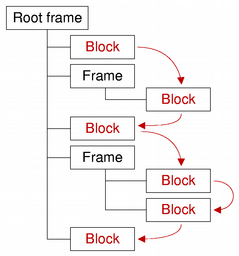

QTextBlock Class
The QTextBlock class provides a container for text fragments in a QTextDocument. More...
| Header: | #include <QTextBlock> |
| CMake: | find_package(Qt6 REQUIRED COMPONENTS Gui) target_link_libraries(mytarget PRIVATE Qt6::Gui) |
| qmake: | QT += gui |
- List of all members, including inherited members
- QTextBlock is part of Rich Text Processing APIs.
Note: All functions in this class are reentrant.
Public Types
Public Functions
| QTextBlock(const QTextBlock &other) | |
| QTextBlock::iterator | begin() const |
| QTextBlockFormat | blockFormat() const |
| int | blockFormatIndex() const |
| int | blockNumber() const |
| QTextCharFormat | charFormat() const |
| int | charFormatIndex() const |
| void | clearLayout() |
| bool | contains(int position) const |
| const QTextDocument * | document() const |
| QTextBlock::iterator | end() const |
| int | firstLineNumber() const |
| bool | isValid() const |
| bool | isVisible() const |
| QTextLayout * | layout() const |
| int | length() const |
| int | lineCount() const |
| QTextBlock | next() const |
| int | position() const |
| QTextBlock | previous() const |
| int | revision() const |
| void | setLineCount(int count) |
| void | setRevision(int rev) |
| void | setUserData(QTextBlockUserData *data) |
| void | setUserState(int state) |
| void | setVisible(bool visible) |
| QString | text() const |
| Qt::LayoutDirection | textDirection() const |
| QList<QTextLayout::FormatRange> | textFormats() const |
| QTextList * | textList() const |
| QTextBlockUserData * | userData() const |
| int | userState() const |
| bool | operator!=(const QTextBlock &other) const |
| bool | operator<(const QTextBlock &other) const |
| QTextBlock & | operator=(const QTextBlock &other) |
| bool | operator==(const QTextBlock &other) const |
Detailed Description
A text block encapsulates a block or paragraph of text in a QTextDocument. QTextBlock provides read-only access to the block/paragraph structure of QTextDocuments. It is mainly of use if you want to implement your own layouts for the visual representation of a QTextDocument, or if you want to iterate over a document and write out the contents in your own custom format.
Text blocks are created by their parent documents. If you need to create a new text block, or modify the contents of a document while examining its contents, use the cursor-based interface provided by QTextCursor instead.
Each text block is located at a specific position() in a document(). The contents of the block can be obtained by using the text() function. The length() function determines the block's size within the document (including formatting characters). The visual properties of the block are determined by its text layout(), its charFormat(), and its blockFormat().
The next() and previous() functions enable iteration over consecutive valid blocks in a document under the condition that the document is not modified by other means during the iteration process. Note that, although blocks are returned in sequence, adjacent blocks may come from different places in the document structure. The validity of a block can be determined by calling isValid().
QTextBlock provides comparison operators to make it easier to work with blocks: operator==() compares two block for equality, operator!=() compares two blocks for inequality, and operator<() determines whether a block precedes another in the same document.

See also QTextBlockFormat, QTextCharFormat, and QTextFragment.
Member Function Documentation
QTextBlock::QTextBlock(const QTextBlock &other)
Copies the other text block's attributes to this text block.
QTextBlock::iterator QTextBlock::begin() const
Returns a text block iterator pointing to the beginning of the text block.
See also end().
QTextBlockFormat QTextBlock::blockFormat() const
Returns the QTextBlockFormat that describes block-specific properties.
See also charFormat().
int QTextBlock::blockFormatIndex() const
Returns an index into the document's internal list of block formats for the text block's format.
See also QTextDocument::allFormats().
int QTextBlock::blockNumber() const
Returns the number of this block, or -1 if the block is invalid.
See also QTextCursor::blockNumber().
QTextCharFormat QTextBlock::charFormat() const
Returns the QTextCharFormat that describes the block's character format. The block's character format is used when inserting text into an empty block.
See also blockFormat().
int QTextBlock::charFormatIndex() const
Returns an index into the document's internal list of character formats for the text block's character format.
See also QTextDocument::allFormats().
void QTextBlock::clearLayout()
Clears the QTextLayout that is used to lay out and display the block's contents.
See also layout().
bool QTextBlock::contains(int position) const
Returns true if the given position is located within the text block; otherwise returns false.
const QTextDocument *QTextBlock::document() const
Returns the text document this text block belongs to, or nullptr if the text block does not belong to any document.
QTextBlock::iterator QTextBlock::end() const
Returns a text block iterator pointing to the end of the text block.
See also begin(), next(), and previous().
int QTextBlock::firstLineNumber() const
Returns the first line number of this block, or -1 if the block is invalid. Unless the layout supports it, the line number is identical to the block number.
See also QTextBlock::blockNumber().
bool QTextBlock::isValid() const
Returns true if this text block is valid; otherwise returns false.
bool QTextBlock::isVisible() const
Returns true if the block is visible; otherwise returns false.
See also setVisible().
QTextLayout *QTextBlock::layout() const
Returns the QTextLayout that is used to lay out and display the block's contents.
Note that the returned QTextLayout object can only be modified from the documentChanged implementation of a QAbstractTextDocumentLayout subclass. Any changes applied from the outside cause undefined behavior.
See also clearLayout().
int QTextBlock::length() const
Returns the length of the block in characters.
Note: The length returned includes all formatting characters, for example, newline.
See also text(), charFormat(), and blockFormat().
int QTextBlock::lineCount() const
Returns the line count. Not all document layouts support this feature.
See also setLineCount().
QTextBlock QTextBlock::next() const
Returns the text block in the document after this block, or an empty text block if this is the last one.
Note that the next block may be in a different frame or table to this block.
See also previous(), begin(), and end().
int QTextBlock::position() const
Returns the index of the block's first character within the document.
QTextBlock QTextBlock::previous() const
Returns the text block in the document before this block, or an empty text block if this is the first one.
Note that the previous block may be in a different frame or table to this block.
See also next(), begin(), and end().
int QTextBlock::revision() const
Returns the blocks revision.
See also setRevision() and QTextDocument::revision().
void QTextBlock::setLineCount(int count)
Sets the line count to count.
See also lineCount().
void QTextBlock::setRevision(int rev)
Sets a blocks revision to rev.
See also revision() and QTextDocument::revision().
void QTextBlock::setUserData(QTextBlockUserData *data)
Attaches the given data object to the text block.
QTextBlockUserData can be used to store custom settings. The ownership is passed to the underlying text document, i.e. the provided QTextBlockUserData object will be deleted if the corresponding text block gets deleted. The user data object is not stored in the undo history, so it will not be available after undoing the deletion of a text block.
For example, if you write a programming editor in an IDE, you may want to let your user set breakpoints visually in your code for an integrated debugger. In a programming editor a line of text usually corresponds to one QTextBlock. The QTextBlockUserData interface allows the developer to store data for each QTextBlock, like for example in which lines of the source code the user has a breakpoint set. Of course this could also be stored externally, but by storing it inside the QTextDocument, it will for example be automatically deleted when the user deletes the associated line. It's really just a way to store custom information in the QTextDocument without using custom properties in QTextFormat which would affect the undo/redo stack.
See also userData().
void QTextBlock::setUserState(int state)
Stores the specified state integer value in the text block. This may be useful for example in a syntax highlighter to store a text parsing state.
See also userState().
void QTextBlock::setVisible(bool visible)
Sets the block's visibility to visible.
See also isVisible().
QString QTextBlock::text() const
Returns the block's contents as plain text.
See also length(), charFormat(), and blockFormat().
Qt::LayoutDirection QTextBlock::textDirection() const
Returns the resolved text direction.
If the block has no explicit direction set, it will resolve the direction from the blocks content. Returns either Qt::LeftToRight or Qt::RightToLeft.
See also QTextFormat::layoutDirection(), QString::isRightToLeft(), and Qt::LayoutDirection.
QList<QTextLayout::FormatRange> QTextBlock::textFormats() const
Returns the block's text format options as a list of continuous ranges of QTextCharFormat. The range's character format is used when inserting text within the range boundaries.
See also charFormat() and blockFormat().
QTextList *QTextBlock::textList() const
If the block represents a list item, returns the list that the item belongs to; otherwise returns nullptr.
QTextBlockUserData *QTextBlock::userData() const
Returns a pointer to a QTextBlockUserData object, if one has been set with setUserData(), or nullptr.
See also setUserData().
int QTextBlock::userState() const
Returns the integer value previously set with setUserState() or -1.
See also setUserState().
bool QTextBlock::operator!=(const QTextBlock &other) const
Returns true if this text block is different from the other text block.
bool QTextBlock::operator<(const QTextBlock &other) const
Returns true if this text block occurs before the other text block in the document.
QTextBlock &QTextBlock::operator=(const QTextBlock &other)
Assigns the other text block to this text block.
bool QTextBlock::operator==(const QTextBlock &other) const
Returns true if this text block is the same as the other text block.